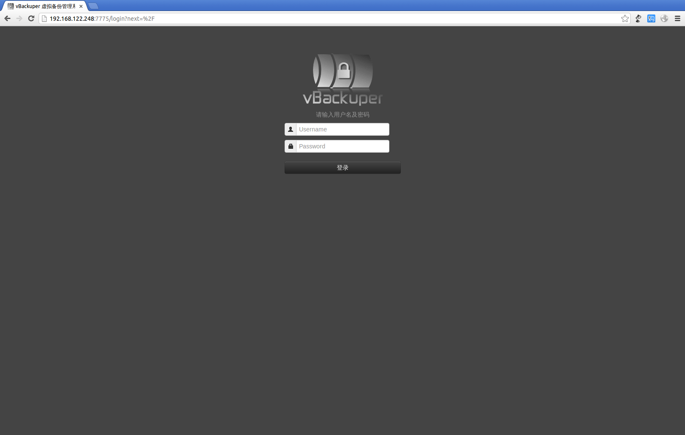
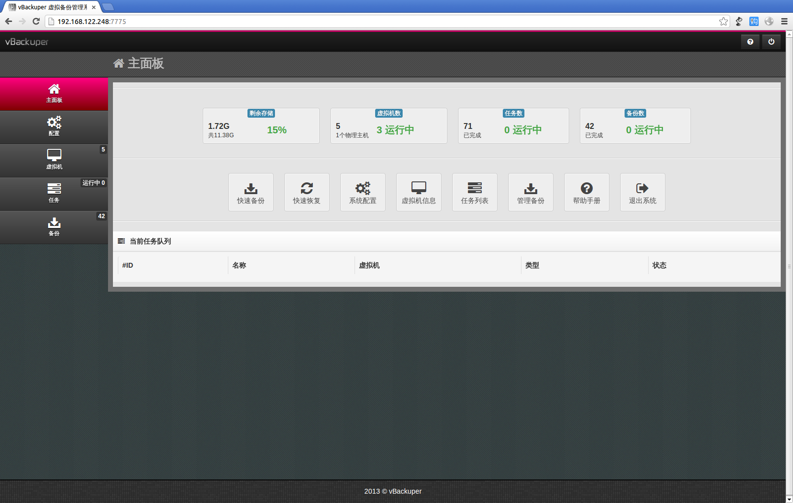
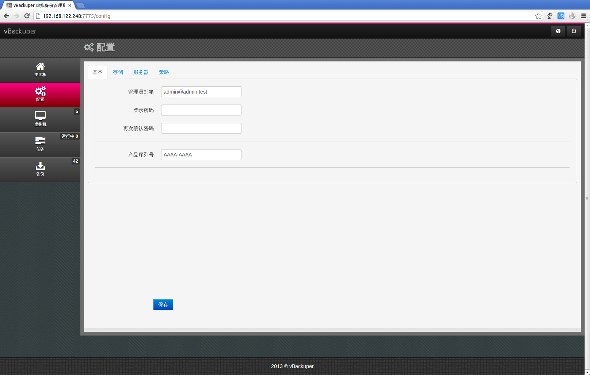
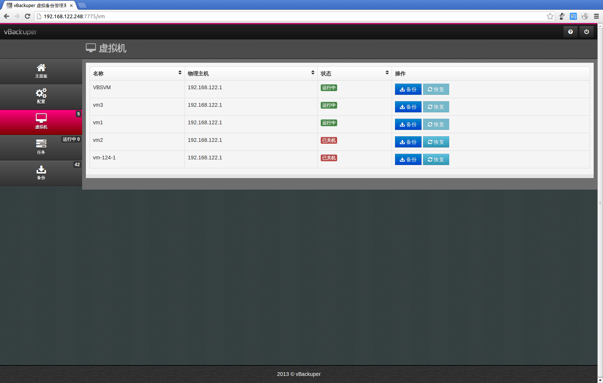
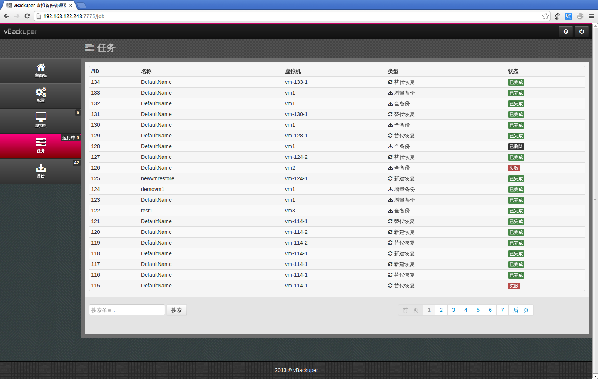

SimpleCloud 开源云计算系统
开源虚拟化管理软件。
项目简介
使用python重写的SimpleCloud开源版，提供基本的服务器，镜像，模板，虚拟机的管理功能，可用于管理小型虚拟化集群及IaaS相关应用的快速原型开发。
现有的开源IaaS，无论openstack，cloudstack都过于复杂，搭小规模虚拟化集群没必要花费大量学习成本，复杂功能也用不到，正是出于这个目的才有的这个小项目。 设计力求简单，代码量不大，结构清晰，非常适合快速开发，新功能添加仅需几个小时。
源代码及文档
- 源码，开发文档及使用截图: https://github.com/simplecloud/simplecloud。
Demo
- SimpleCloud体验平台：http://118.244.225.182
- 管理员用户名密码admin/000000；普通用户mike/000000，也可随意创建。
SimpleNode 虚拟化平台
基于Xen的服务器虚拟化软件。
项目简介
SimpleNode是一种服务器虚拟化平台，基于强大成熟的Xen Hypervisor虚拟化技术，支持快速部署在裸机硬件上，用于高效管理Windows及Linux虚拟机。 具有简单易用，易安装部署，高可扩展性，强大的存储及虚拟网络管理能力。
功能特点
- 在裸机直接安装部署
- 基于Xen虚拟化技术，支持VT技术
- 支持Windows及Linux多种操作系统
- 增强虚拟机IO及网络性能
- 安装部署简单，类似于安装操作系统
- 支持多种本地及网络存储设备
- 基于资源池统一管理虚拟及物理资源
- 支持虚拟机动态迁移
- 支持虚拟机模板
- 支持虚拟机快照技术
- 强大的存储管理能力
- 支持多网卡绑定，本地虚拟交换机及虚拟VLAN
vBackuper虚拟备份管理工具
虚拟机磁盘备份产品。
项目简介
vBackuper提供针对虚拟化的备份解决方案。支持对运行状态的虚拟机进行全备份，增量备份。提供对备份数据的去重，压缩，加密等增值功能，增强备份效率的同时，有效保护虚拟机数据的安全。
vBackuper当前版本v1.0实现了KVM平台上针对RAW，QCOW2格式虚拟磁盘进行实时增量备份的软件。支持将磁盘备份到NFS，Virtual Disk。部署形式是Virtual Appliance，提供Web UI，命令行， Restful API三种接口。为用户提供管理自己所有任务及虚拟机备份的界面。
功能列表
核心功能
- 动态增量备份与恢复
- 简单易用的Web操作界面
- 多站点间虚拟机灾备解决方案
虚拟机运行时备份，无需停机。仅备份用户改变的数据快，实现快速备份。
仅需要简单的点击一个按钮就可以进行虚拟机备份和恢复。具体可见 界面截图。
配置多个vBackuper实例在不同站点，通过vBackuper的合作实现多站点间的虚拟数据中心灾备，迁移和复制。
其他功能
- 虚拟应用模式，无需额外硬件
- 可扩展架构
- 多备份存储支持
- 智能备份模式
- 任务邮件通知
- 支持KVM静止模式
- 多种恢复模式
- Restful API
- 支持多种虚拟化平台（开发中）
- 支持灵活的备份策略（开发中）
- 块级别的加密去重（开发中）
- 多物理主机支持（开发中）
vBackuper作为一个虚拟机发布，无需hypervisor安装任何代理，易于安装部署。
为了避免一个vBackuper成为瓶颈，架构设计为多个vBackuper可以并行执行多个备份任务。
支持备份到NFS，虚拟磁盘，以及其他分布式文件系统。
根据当前虚拟机备份状态智能选择全备份或增量备份模式。
可以配置管理员邮箱通知任务状态。
对于安装了QEMU-AGENT的虚拟机，支持静止模式保证备份磁盘数据的一致性。
支持从备份重建虚拟机，或者替代虚拟机当前的虚拟磁盘。
提供API接口，易于系统集成
支持KVM，未来会加入Xen，XenServer，VMware平台的支持
可配置周期备份以及计划备份任务。
针对数据块进行加密和去重操作，将结果数据传输到备份存储。
可以添加多个物理主机，管理其上的虚拟机的备份与恢复。
界面截图
-
登录界面
- 登录vBackuper虚拟备份管理系统
- 
-
主面板
- 包含备份存储，虚拟机，任务以及备份的信息
- 提供了主要功能的快捷方式
- 展示当前运行的任务状态
- 
-
系统配置
- 配置管理员信息与产品序列号
- 修改备份存储信息（NFS或虚拟磁盘）
- 添加和删除物理服务器
- 设置存储策略
- 
-
虚拟机备份与恢复管理
- 展示所有管理的虚拟机信息
- 提供每个虚拟机的备份与恢复接口
- 
-
任务管理
- 任务状态查看
- 任务运行队列管理
- 
-
备份管理
- 备份状态查看
- 由备份恢复虚拟机或创建新虚拟机
- 过期备份删除
-

安装方法
- 部署vBackuper虚拟机到物理服务器上
- 配置vBackuper虚拟机网络
- 启动vBackuper虚拟机
- 登陆http://vBackuper_VM_IP:7775，使用默认密码登入后进行简单配置（管理员邮箱，密码，备份存储）
- 添加需要管理的物理服务器
- 完成基本配置后即可以查看虚拟机并进行备份和恢复
研发进度
1.0 Beta版代码开发完成，进入测试阶段
SimpleCloud 轻量级云计算平台
IaaS云计算平台
项目简介
SimpleCloud云计算平台是基于虚拟化的云计算管理软件，为企业IT环境构建私有云， 以弹性的方式管理物理资源和虚拟资源，提高服务器利用率，降低IT部署和管理成本。 主要的特点是易用（安装，部署和使用），智能，自动化，稳定，安全，易定制集成。 同时也具有一般私有云平台的动态性，弹性扩展，基于策略，多虚拟化平台支持等优点， 可以在企业普通的硬件及网络环境中构建动态的可扩展的虚拟化云计算平台。 国外类似的商业和开源产品很多，例如CloudStack，OpenStack，Eucayptus，Enomaly, OpenNebula, OpenQRM 等， 以及Microsoft，HP，IBM，RedHat，VMware等巨头提供的私有云解决方案。
SimpleCloud系列产品包括云平台和云应用两大部分，云平台即SimpleCloud云计算平台，云应用包括云安全（SimpleSecurityApp）， 云迁移（SimpleGoCloud）两个关键应用，计划基于SimpleCloud平台添加更多的IaaS层面的云应用， 一些优秀的云应用未来将作为独立的产品发布，用以支持其他的云平台。 用户界面方面，目前提供完整的命令行接口SimpleCLI，详细介绍请见SimpleCloud项目介绍。
产品特点
易用
智能
稳定
安全
集成与定制
易于部署：SimpleCloud设计上简化了安装部署以及云环境的使用和管理逻辑，提供更直观的虚拟资源管理方式， 绝大部分的云资源的管理都将实现自动化和基于策略的管理。 云管理员可以轻松地按照简单的步骤在企业内部部署自己的私有云，终端用户可以按需申请资源，资源对象的组织更接近于实际的物理环境。
友好的用户接口：SimpleCloud提供强大的API并在此之上提供丰富的用户接口，包括远程命令行接口和Web界面。 命令行工具可以应用在部署脚本中，进行自动化的云管理。为基于虚拟化平台的云计算环境提供的Web管理界面， 目前基于SimpleCloud的python API编写，未来发展目标将会独立出来支持对其他私有云平台甚至公有云的连接。 从而为用户管理公有云与私有云资源提供统一的界面和体验模式。
自动化设计：SimpleCloud的智能体现在更多的自动化设计。首先识别不同的虚拟化平台，并选择为其提供不同的处理模块； 其次虚拟机和物理机器同时提供PXE网卡启动的支持，可以直接将裸机加入到私有云环境中并自动检测，安装和启动成一个计算节点， 在私有云扩展的过程中，客户需要做的仅仅是告诉云平台新加入的物理机器的网卡MAC； 再次，SimpleCloud可以根据客户的硬件环境匹配最优的管理策略，并提供相应的接口供客户调整默认策略。
轻量级：SimpleCloud作为轻量级的私有云环境，一切设计上的考虑都以稳定性为基础。SimpleCloud专为企业私有云以及中小规模的IDC服务提供商设计，单个云平台仅部署中小规模的物理环境中（少于100台主机）。但是，SimpleCloud有计划在发展到一定阶段进行相应的扩展，支持更大规模的云环境部署。
模块化：简化核心部分逻辑，以模块化方式包含云平台部署的关键功能，并且各个模块之间尽量独立，保持稳定性设计的同时为云平台的快速定制提供了基础。
插件模式：平台提供插件模式供新的功能扩展和集成，将可能出现问题的区域隔离到相应的功能插件内，目前SimpleSecurityApp已经以插件的形式集成到SimpleCloud中。
访问控制：SimpleCloud内部实现了基于身份的访问控制，提供了两种身份用户：云平台管理员和云平台标准用户。并且内部实现了一个用户权限管理的子系统，也将支持与主流的用户授权框架集成，对所有的API以及资源访问进行严格的访问控制。
API安全：SimpleCloud提供的API 接口支持SSL加密，具有一定安全保证。
集成SimpleSecurityApp集成SimpleSecurityApp：由于与SimpleSecurityApp云安全应用的集成，SimpleCloud具有了为每个虚拟主机提供单独的安全服务例如外围防火墙的功能。目前，SimpleSecurityApp原型仅运行在SimpleCloud，但是设计上完全独立，可以单独出来作为产品集成到其他云平台中。SimpleSecurityApp也被设计成插件框架，可以很容易的为其加入新的安全服务，目前原型中仅仅实现了防火墙安全服务。
丰富的API：SimpleCloud提供丰富的API接口，目前版本并不与Amazon EC2兼容，对系统集成友好，系统目前提供支持多种语言的SDK，包括C++，Java，Python，Perl等。提供的API以虚拟资源类型进行组织，更易于用户理解和与业务系统的集成。
插件模式：平台内部提供了插件框架，支持在SimpleCloud内部加入新的功能，为扩展开发提供了便利。
产品定位
SimpleCloud定位于企业私有云，为企业提供简单，智能，安全，稳定的私有云平台及友好的集成定制接口，搭建企业迈入云计算的桥梁。 在SimpleCloud完全产品化之后，通过部署SimpleCloud私有云环境，企业客户可以获得的价值包括但不限于下列描述：
- 轻量级的云平台
- 简单的按需部署自服务模式
- 快速的安装和设置
- 模块化和插件框架的系统设计易于定制和集成
- 物理资源的充分利用和整合
- 灵活的弹性虚拟资源管理
- 智能迅速的虚拟环境部署和资源生命周期管理
- 更好的应用程序的备份和数据安全管理
- 安全的支持多种语言的API
- 保证服务的高可用性
- 更低的IT基础设施构建和管理成本
- 提高企业内部IT业务流程的管理效率
- 其他通用私有云环境的优势
功能列表
- 用户管理
- 虚拟机管理
- 物理主机管理
- 虚拟机镜像管理
- 策略管理
- 虚拟机模板管理
- 任务管理
- 系统管理
- 客户端
- API和集成
- 网络管理
- 存储管理
应用场景
- 构建按需部署的，弹性的可扩展的虚拟数据中心
- VPS和数据中心托管
- SaaS服务的后端框架和集成
- PaaS服务的后端框架和集成
- 大数据处理
- 按需处理峰值运算时的工作量
- 开发测试云环境
- 教育环境
- 内部SaaS集成：ERP，CRM，email
- 数据和环境备份
- 为应用提供云数据库后端
- 资源共享和演示
- 物理主机的整合
SimpleSecurityApp
IaaS平台虚拟机安全管理软件。
SimpleSecurityApp为云环境提供安全服务，保护云中的应用免受来自网络的攻击。 SimpleSecurityApp应用将为每一个虚拟机提供更加灵活的独立防火墙等安全服务，而用户体验仍然与在物理环境中配置安全设备相同。 作为一种没有硬件依赖的云安全解决方案，降低了用户保护云资产的成本，灵活的配置也同时提高了安全管理的效率。 设计上采用插件模式，提供了更好的扩展性，可以添加或集成新的根据其接口开发的安全应用插件，比如防火墙，IDS，IPS等网络安全服务。
SimpleMonitor
虚拟机监控软件。
研究Xen半虚拟化环境下虚拟机进程及文件活动监控，提出虚拟机内进程文件访问行为的动态和静态监控理论方法。 基于XenAccess库实现了虚拟机安全监控系统原型。使用Virtual Machine Introspection技术监控虚拟机内部的进程活动以及对文件的访问。